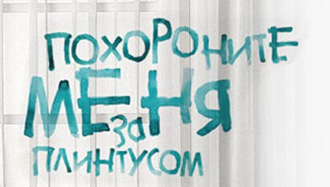
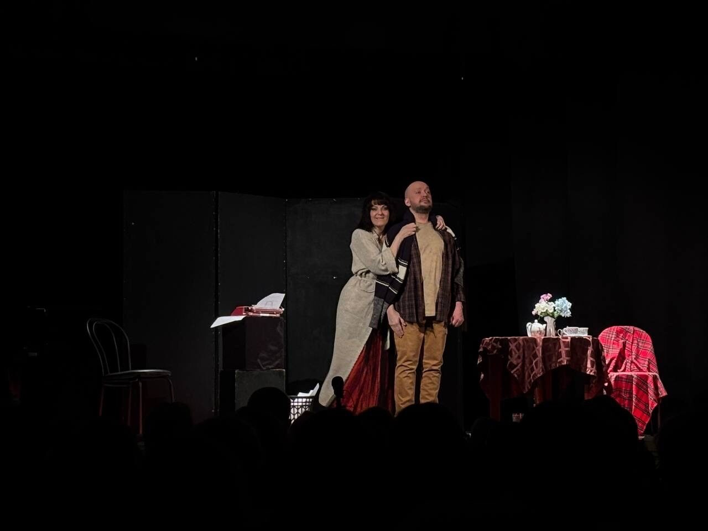
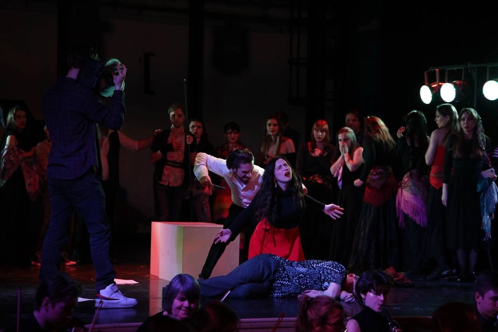
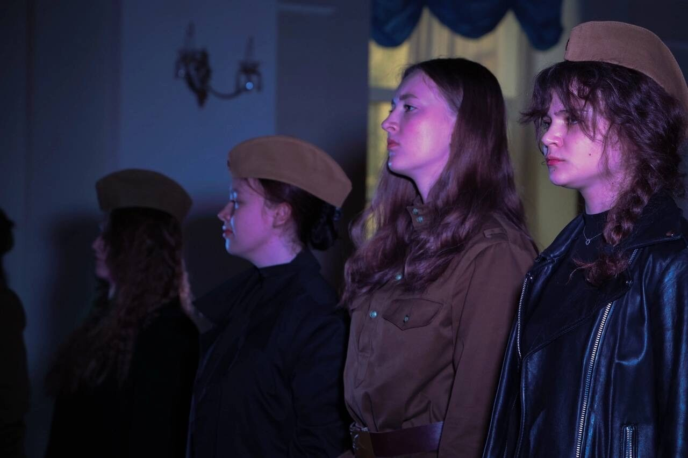

Готовится к постановке

драмаП. Санаев., инсценировка Г. Шилова
премьера — осень 2026
Похороните меня за плинтусом
Режиссёр-постановщик
Следите за новостями
Опера, музыкальный театр и перформанс — от восстановления классики до авторских постановок
С 2022 года Георгий Шилов работает как режиссёр с собственным творческим почерком — на стыке оперы, драмы и музыкального театра. Ассистент маэстро Джанкарло дель Монако, постановщик боевых сцен в Мариинском театре, лауреат конкурса «Вампилов.FEST».
Готовится к постановке

драмаП. Санаев., инсценировка Г. Шилова
премьера — осень 2026
Режиссёр-постановщик
Следите за новостями
 опера
операG.Verdi
2023
Режиссёр-постановщик, Художник-постановщик
Особняк Мясникова, Санкт-Петербург
Подробнее музыкально-травматический спектакль
музыкально-травматический спектакль2022
Автор идеи, режиссер-педагог
По мотивам дневников артистов блокадного Ленинграда
Подробнее Режиссёр
Режиссёр2022–2023
Режиссёр восстановления и адаптации
Консерватория, театр «Мюзик-Холл»
 опера
опера музыкальный спектакль
музыкальный спектакльпо мотивам пьесы Г.Горина «Поминальная Молитва» и мюзикла Дж. Бока и Дж. Стайна «Скрипач на Крыше»
2025
Режиссёр-постановщик
Санкт-Петербургская Государственная Консерватория имени Н.А. Римского-Корсакова
Подробнее
драма2024
Режиссёр-постановщик
Союз театральных Деятелей РФ

операС. Рахманинов
2025
Режиссёр-постановщик, Художник-постановщик
Фестиваль innRachmaninoff

музыкальный спектакльпо мотивам повести Б.Васильева «А зори здесь тихие» и оперы К. Молчанова
2025
Режиссёр-постановщик
К 80-летию Победы
 stand-up tragedy
stand-up tragedyМ. Праматарова
2024
Режиссёр-постановщик, Художник-постановщик
Союз театральных Деятелей РФ
 театрализованный концерт
театрализованный концерт2023
Режиссёр концерта
Большой зал Московской консерватории
 опера
операG.Verdi
2026
Режиссёр (Associate Director)
Большой театр Беларуси
Постановка Giancarlo del Monaco
 драма
драмаЕ. Коллегова
2026
Режиссёр-постановщик, Художник-постановщик
Иркутский академический драматический театр имени Н. П. Охлопкова
Подробнее театрализованный концерт
театрализованный концерт театрализованный концерт
театрализованный концерт театрализованный концерт
театрализованный концерт2024
Режиссёр-постановщик
Санкт-Петербургская государственная консерватория имени Н. А. Римского-Корсакова
премьера — осень 2026
Режиссёр-постановщик · Следите за новостями
2023
Режиссёр-постановщик, Художник-постановщик · Особняк Мясникова, Санкт-Петербург
2022
Автор идеи, режиссер-педагог · По мотивам дневников артистов блокадного Ленинграда
2022–2023
Режиссёр восстановления и адаптации · Консерватория, театр «Мюзик-Холл»
2024
Режиссёр-постановщик · Московский Оперный Салон
2025
Режиссёр-постановщик · Санкт-Петербургская Государственная Консерватория имени Н.А. Римского-Корсакова
2024
Режиссёр-постановщик · Союз театральных Деятелей РФ
2025
Режиссёр-постановщик, Художник-постановщик · Фестиваль innRachmaninoff
2025
Режиссёр-постановщик · К 80-летию Победы
2024
Режиссёр-постановщик, Художник-постановщик · Союз театральных Деятелей РФ
2023
Режиссёр концерта · Большой зал Московской консерватории
2026
Режиссёр (Associate Director) · Большой театр Беларуси
2026
Режиссёр-постановщик, Художник-постановщик · Иркутский академический драматический театр имени Н. П. Охлопкова
2026
Режиссёр · Главная площадь, Оренбург
2026
Режиссёр-постановщик · Оренбург
2024
Режиссёр-постановщик · Санкт-Петербургская государственная консерватория имени Н. А. Римского-Корсакова
Либретто, пьесы и сценарии для театра и кино
 Автор либретто
Автор либретто2020
Автор либретто
Белорусский государственный академический музыкальный театр
 Автор либретто
Автор либретто2021
Автор либретто
Сеул, Южная Корея
 Автор Сценария
Автор Сценария2021
Автор сценария
Короткометражный фильм.
— «Лучший короткометражный фильм» и «Лучший монтаж» в Венгрии (Pápa International Historical Film Festival)
— Победа в номинации «Золотое руно» в Москве
— Приз за «Лучшую операторскую работу» на фестивале «Сделано в Санкт-Петербурге»